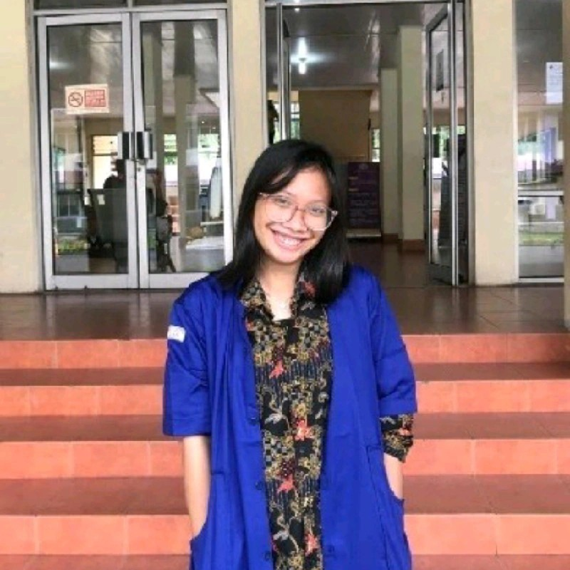

Deskripsi Singkat
Hai, perkenalkan, nama saya Jesica Oktavia Manik, mahasiswa Program Studi Teknik Komputer di Politeknik Negeri Medan. Selama studi saya, saya telah terlibat dalam berbagai proyek yang mengasah keterampilan teknis dan kemampuan problem-solving saya. Saya antusias untuk terus mengembangkan keterampilan di bidang teknologi, berkolaborasi dalam proyek-proyek yang menantang, dan memberikan kontribusi positif dalam setiap kesempatan yang ada.